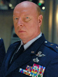

Forums galactiques > Assemblée Galactique : diplomatie officielle > Archives des présentations
Pages : 1 2 ... 8 9 10 ... 63 64
| khalim Respect diplomatique : 488  11/03 ETU 23:52 | Score : 2 Détails (Voyant Scar emporter la moitié des pizzeria)
régale-toi Scar mais laisses-en aux autres! | ||
| Lord_Traquemort Respect diplomatique : 43  12/03 ETU 14:42 | Score : 4 Détails Un nuage de fumée noire apparue soudainement dans la salle.
Il prit peu à peu forme et au bout de 1 minute vous voyez une créature humanoide qui prit la parole: "Salutation noble assemblée, je suis Lord_Traquemort seigneur de Sandrakor. Je sors tout juste de l'école de stratégie Ender. Je suis là pour vous annoncer mes intentions de conquete galactiques. Bien entendue je n'ai que des intentions pacifiques, donc si on ne m'attaque pas je ne déclarerais la guerre a personne. A bientôt!" Le nuage de fumée disparue comme il était venue. | ||
| Le Nalfe Respect diplomatique : 96  12/03 ETU 17:27 | Score : 5 Détails Il est des hommes que l'on ne croise que dans les couloirs d'une assemblée ou ne résonnent que de longues tirades lyriques,mettant en lumière les personnages charismatiques qui les pronnoncent,tels des comédiens tragique.
Parfois ne pas se montrer,ni s'exposer au vues de tous est préférable, l'ombre des couloirs protège de bien des dangers et il arrive parfois que l'on se surprenne à écouter ces conversations,quand bien même on ne pourrait y intervenir. Cependant il faut bien un jour emprunter ce couloir jusqu'au bout.... La lumière et les innombrables voix qui surgissent en une farction de seconde sont de loin plus assomantes que les dimensions pourtant écrasantes de la salle. Un homme s'avance, bizarement accouttré, une sorte de kimono de très haute facture laisse apparaitre les nombreux entrelacs et arabesques peints sur son corp.Deux sabres sont passés à sa ceinture et un petit homme à l'air angoissé le harcelle de ses remarques: " -Aller dépèche toi sinon on va être en retard!!! -t'en fais pas je suis bien placé pour le savoir...tu les as au moins??? -beuh... -Et m**de il va les avoir paumées!!!On verra plus tard c'est à moi... harem... harem... Mesdames Messieurs et autres, futurs rivaux ou amis en devenir,je suis ici devant vous pour représenter mon peuple dans ces temps troubles et présenter ses respects à tous les commandants. Mais pour ma première intervention à l'Assemblée je m'adresse plus particulierement à ceux à qui leur talent a permis de réussir dans leur système mais qui confrontés à un futur incertain doutent que leur seul talent suffise dans la "cour des grands". Je suis comme vous! Tout comme deux de mes amis. Avec eux,et grâce à eux j'ai entrepris de monter un projet que je vous présenterais d'ici peu et qui pourrait assurer à ceux là une chance de tirer leur épingle du jeu. Je m'excuse de ne pouvoir le faire aujourd'hui mais je suis pressé: Je me marie dans 42minutes et mon ami ici présent vient de m'anoncer qu'il a perdu les alliances....^^' ... -Désolé pour les alliances je vais les retrouver, je t'assure. -Au moins on les aura fais rire à défault de leur montrer qu'on peut jouer avec les grands!!!Bravo deux parfait Guignols!!!Aller cours plus vite on va être en retard!!!" | ||
| Alexandre Le Grand Respect diplomatique : -1  18/03 ETU 23:50 | Score : 2 Détails un homme grand fort blond au yeux bleus s'avancea.il était vetu d'une toge de type grecque, il alla au centre de la salle et pris son courage a deux mains et dit:
""""Je me prensente alexandre le grand, j'etait sur mon bateau pour rentre chez moi quand tout à coup un orage éclata et mon bateau fu aspire et me voila arrive ici"""""""""""""""" | ||
| Vladimir Harkonnen Respect diplomatique : 2306  19/03 ETU 09:44  | Score : 1 Détails Bienvenue à tous les nouveaux commandants !
Vous trouverez toutes les informations dont vous aurez besoin à l'assemblée. Les coins plus sympa sont à la taverne, et pour les bonnes affaires, filez au marché ! A l'assemblée, une tenue correcte est exigée. C'est à dire qu'il vous faudra être polis et respectueux, sans abuser des fautes d'orthographe (plusieurs commandant onts proposé leur aide dans des sujets contre l'illettrisme à la taverne. Je rappelle qu'il ne faut pas écouter le commandant Wolverine qui dit que je suis gros. Alors que ce n'est pas vrai ! Un peu enrobé à la rigueur... Vous qui arrivez dans cette galaxie, ne me juger pas sur mon poids... Je rappelle également que je suis le seul avocat de cette galaxie. Je suis prêt à vous défendre, débutants ou non. Merci de votre attention, et encore bienvenue en ces lieux ! | ||
| Aldarick Respect diplomatique : 68  22/03 ETU 22:35 | Score : 2 Détails * Constatant le brouhaha qui reignait dans la salle de présentation, Aldarick se leva et gagna le pupitre. En tapotant sur le micro, il réussi à ramener un semblant de silence, et une foi qu'il fut sûr d'avoir capté l'attention, il s'adressa à l'Assemblée.
"Hum... il est important que les nouveaux commandants pensent à se présenter à l'assemblée. Il est toujours agréable de connaître ses futurs alliés, et toujours utile de connaître ses futurs ennemis. J'encourage tous ceux qui nous rejoignent à venir prendre la parole ici. Merci." * Sur ce, Aldarick retourna s'assoir à sa place. | ||
| Milamber Respect diplomatique : 4  03/04 ETU 09:10 | Score : 0 Détails [HRP] Petit up pour les nouveaux [/HRP]
| ||
| Xsan Respect diplomatique : 21  04/04 ETU 00:10 | Score : 10 Détails *Un hologramme vacillant se matérialisa au centre de la pièce. Celui ci représentait un homme d'age mûr aux cheveux et à la barbe légèrement grisonnants. Il se tenait très droit, se donnant ainsi solide allure, mais les traits tirés de son visage ne trompait pas sur son état de fatigue. Au coin de ses lèvres se trouvait ce qui semblait être une cigarette. L'air surpris, il aspira une dernière bouffée, et la jeta nerveusement au sol. Après s'être raclé la gorge, et avoir écarté d'un soufflet de la main un nuage de fumée avoisinant, il commença à parler.*
Peuples de tout horizon, bonjour! Permettez moi de me présenter, je me nomme Xsan, et je suis un ex-commandant de l'Alliance Eternelle. Je viens depuis peu de temps d'être accueilli par les habitants d'une planète qui m'était jusque la totalement inconnu. Pour être franc je suis perdu, cela fait plusieurs mois que je dérive dans l'espace avec des instruments de bord complètement déréglés, sans avoir la moindre idée de ce qui a causé de tels disfonctionnements! *Xsan reprit son souffle et continua* J'ai parcouru bon nombre de systèmes dénués de toute forme de vie. Il y a trois jours, moi et mes hommes avons repéré une planète qui semblait être habitable. Nous avons risqué un atterrissage, endommageant ainsi énormément mon vaisseau amiral. A l'heure actuelle je ne sais absolument pas quand je serais en mesure de regagner mes terres. A vrai dire, je ne sais même pas si cela sera possible. Car d'après nos calculs nous devrions encore nous trouver en terrain connu... *Xsan se tut. Le désespoir transparaissait sur son visage. Au bout de quelques instants il se ressaisit.* Les planètes que je commandais auparavant étaient exportatrices de métal, d'énergie, et d'une plante locale aux propriétés intéressantes. J'ai d'ailleurs pu faire découvrir aux habitants de ma planète d'accueil ce végétal étonnant. Je disposais de stocks importants dans mon vaisseaux, car c'était devenu une coutume d'apporter un présent lors de colonisations de planètes. Je tacherais de perpétuer cette tradition. Je crois que j'ai déjà bien trop parlé, je ne voudrais pas vous faire perdre du temps. Mesdames et Messieurs, je vous souhaite une bonne continuation dans vos projets, au revoir! *Le Commandant salua bien bas. L'hologramme se figeât quelques secondes et disparu* | ||
| Ocheeva Respect diplomatique : 20  04/04 ETU 19:22 | Score : 7 Détails On vit une créature étrange s'approcher du centre de l'assemblée..Elle avait une démarche bizarre,les jambes légèrement écartés,ses jambes paraissant orientées sur les cotés..
Elle s'approcha de la barre de l'auditoire,et s'y appuya. Les commandant les plus près de l'auditoir purent voir son visage..C'était un lézard.Mais elle avait quelque chose de bizarre dans ces traits.Une part humaine semblait se disputer avec son apprence bestiale. Lorsqu'elle pris la parole,ce fut d'une voix agréable,quoique assez faible et siflante: "Salutations,membre de l'assemblée.Je suis Ocheeva. Membre et représentant de la race argonienne et de notre planète,l'Argonie,et ses beaux marais. Nous avons été esclave des humains pendant des siècles,et il m'arrive de m'emporter un peu sur certain sujet..Veuillez m'en pardonnez à l'avance." Elle se tut,puis reprit: "Je suis maitre-assassin à la confrérie noire,et ma dague est toujours prête à se planter dans la gorge de quelqu'un. Avis à tous ceux qui oseraient m'insulter. Je ne réclame qu'une chose pour l'instant:un espace minimum pour me dévellopper..Chose difficile à avoir,depuis que quelqu'un a ouvert mon système. J'espère que j'aurais de bonnes relations avec tous,humain et non-humain." Puis elle s'en alla pour aller se perdre dans les dédales obscures de l'assemblée.. | ||
| Versaille Respect diplomatique : 98  04/04 ETU 20:02 | Score : 0 Détails ^^HRP:Bienvenue à tous les nouveaux Commandants,amusez-vous bien sur ce jeu^^
| ||
| alien Bill Respect diplomatique : 25  05/04 ETU 20:56 | Score : 17 Détails la porte de l'assemblée s'ouvra d'un coup et une grande ombre se prolonga sur le sol ... mais venait d'une petite créature cagoulée.
La créature s'avança lentement vers l'estrade au milieu de la salle pour se rpésenter aux autres seigneurs de l'univers. la créature s'installa devant le micro et enleva sa capuche. C'éait en fait un alien, un des derniers de l'univers. "Chers confrères ... plutôt que de vous faire un long discours qui vous donnerais l'envie de sortir de cette pièce fort charmante, j'ai décidé de vous lire ma biographie. Elle est certe longue mais elle en dira plus sur ma personne qu'un long discours..." alien Bill regarda autour de lui pendant quelques secondes et sortit de l'une de ses manches un long rouleau de parchemin magnétique. Puis il toussota et commença sa lecture: " Il y a presque un millier d’années, dans un univers fort lointain le seigneur Bill vivait paisiblement dans sa galaxie à la tête de l’empire le plus puissant de cet univers. La galaxie, qui avait été nommée après le père de Bill lorsqu’il conquit le dernier de ses systèmes solaires, était connue sous le nom de Laxus Galaxy. L’Empire avait également changé de nom après l’Empereur Laxus en son honneur et quand les peuples habitant l’Empire apprirent que ce fut lui-même qui avait formé son fils ils décidèrent qu’à partir de ce moment là le trône ne serait plus accessible qu’à cette dynastie. Les 500 premières années du règne de Bill se passèrent sans soucis à part quelques guerres sans importances de seulement quelques dizaines d’années mais un événement important eut lieu : l’arrivée des êtres humains. Jusque là seuls des aliens vivaient dans cet univers et lorsque les humains arrivèrent par une déchirure spatio-temporelle tous les peuples de l’univers crurent que cela n’était qu’une nouvelle race d’aliens mais ils se rendirent rapidement compte de leur erreur… En effet, les humains, malgré leur espérance de vie bien plus faible que la plupart des aliens, se reproduisaient beaucoup plus rapidement et d’autres humains arrivaient chaque jour plus nombreux par la déchirure spatio-temporelle. Pendant 400 ans environ les humains restèrent plutôt discrets malgré le fait qu’ils aient aux aussi conquis une galaxie en en chassant tous les aliens et qu’ils devirent les plus grands commerçants de l’univers. Mais aux environs 2826 ils commencèrent à faire des incursions dans les galaxies aliens mais jamais contre l’Empire Laxus car ils le savaient trop puissant pour faire des raids contre lui. La seule façon pour eux de détruire l’Empire Laxus aurait été de déclarer une guerre ouverte mais ils n’auraient jamais réussi contre tous les peuples aliens de l’univers. Ou alors … comme ils firent un siècle plus tard … faire venir leur flotte entière de leur univers. Donc les peuples aliens de tout l’univers furent anéantis lors de la grande attaque surprise des humains le 17 novembre 3026. Tous les vaisseaux des Hommes étaient équipés de la propulsion hyperespace alors le temps que les radars aient repéré les flottes ennemies des milliers d’Etoiles de la Mort, de Destructeurs, de Vaisseaux de Bataille ou encore des Bombardiers ces vaisseaux avaient déjà lancé leur attaque massive. En effet, la puissance de feu des humains était trop importante et seuls quelques chefs de faction réussirent à s’enfuir. Bill, étant l’Empereur le plus puissant de son univers fut le premier à réussir à s’enfuir grâce à son ALIEN STARSHIP de distorsion 10 qui était son Vaisseau Mère du genre inclassable et il emmena avec lui plusieurs centaines d’habitants de sa Planète Mère et des machines d’extraction pou préparer l’aménagement d’une nouvelle planète installés dans le vaisseau en catastrophe. Bill mena la voie à travers une autre distorsion secrète qui mena des centaines d’aliens vers un allé simple vers l’univers d'Apocalypsis. En s’installant dans ce nouvel univers peuplé de toutes sortes d'espèces, allant des humains aux créatures des ténèbres en passant par des machine Bill décidé de se renommer alien Bill l’honneur de son peuple presque disparu, il ne restait à cette époque là seulement quelques centaines de survivants de sa race alors qu’ils étaient à une époque plusieurs centaines de milliards… Mais ils sont maintenant plusieurs millions et gagnent en puissance chaque jour… De nos jours alien Bill est à la tête d’une alliance regroupant tous les survivants du massacre des aliens qui ont réussi à se reconstruire et à retrouver la trace du descendant de Laxus. Alien Bill s’est fait des liens très forts et s’est fait de très puissants alliés pour se reconstruire un empire digne de ce nom et détruire tous les humains ayant toujours des mauvaises intentions envers les aliens. L’ALIEN POWERSHIP, l’amélioration de l’ALIEN STARSHIP, est doté de la distorsion 15 et de nanites qui en font l’un des vaisseaux les plus puissants de l’univers et le joyau de la flotte d’alien Attack. Tout en restant lui-même relativement discret sur la scène intergalactique de peur que ses anciens ennemis humains ne le retrouvent et recommencent leur massacre alien Bill est en passe de devenir l'un des seigneurs les plus influents de la Galaxie. Et parmis ses alliés privés figurent certains des seigneurs les plus puissants de l’univers ? En bref, malgré sa discrétion, alien Bill est en passe de devenir l’un des seigneurs les plus influents de l’univers." Après cela il fit craquer son cou quelques fois, rangea son parchemin et regarda à nouveau l'assemblée, elle semblait être moins nombreuse, peut être aurait-il dû limiter sa lecture à une partie seulement de sa biographie... "J'éspère ne pas trop vous avoir ennuyé, j'attendrais vos réactions dans les tribunes." Il fit donc exactement cela et allat s'asseoire dans un coin sombre où il ne serait pas repéré par quelque espion humain... | ||
| Vladimir Harkonnen Respect diplomatique : 2306 06/04 ETU 17:43 | Score : 0 Détails La bienvenue à vous commandant alien Bill. Votre présentation était des plus remarquables ! Puisse le peuple alien retrouver sa grandeur de jadis, sans pour autant que cela ne vire à l'expansionnisme. * rire *
Si vous venez tout juste d'arriver, je vous recommande de joindre la FACOD (contactez-moi par MP) qui vous proposera son aide pour votre développement. En cas de conflit avec vos voisins ou d'autres commandants trop expansionnistes, contactez les diplomates (Impératrice Jade et moi-même jusqu'au 13/04 ETU). Les offres de la FACOD sont bien évidemment valables pour tous les autres commandants débutants. | ||
| Hammond Respect diplomatique : 6  07/04 ETU 17:26 | Score : 6 Détails Un rayon de lumière éclaircit soudain la salle, et un homme se téléporta aumillieu de l'assemblée…
Cet homme était vêtu d'un costume de cérémonie bleu marine, incrusté de part et d'autre de boutons dorées… Cet homme addressa l'assemblée en ses thermes: "Bonjour à vous, nobles Commandants. Je suis Hammond, de la Fédération" | ||
| Ariel Golleport Respect diplomatique : 959  07/04 ETU 18:52 | Score : 1 Détails Monsieur : êtes vous pour la paix ? Si la réponse est positive, je vous conseille d'entrer dans le LPG ! Comme je disais dans un précédent message, le LPG est trop cool, trop trop forte, trop pour la paix (j'en suis la preuve) et puis elle offre le Gin tonique aussi, la coalition.
| ||
| Sether Respect diplomatique : 116  07/04 ETU 19:59 | Score : 4 Détails Un hologramme illumina la salle, représentant un triangle noir, pointé vers le bas, traversé d'un eclair blanc.
"Commandants de toute races, de tout genres et de tout âge. Permettez moi de faire entendre ma synthétique voix. Je tenais à me présenter officiellement devant l'assemblée. Il est temps de vous reveler mon existence. Je suis le prototype de vaisseau intelligent dénommé Sether. J'ai de très nombreux attributs, qui, soyez en sûr, ne sont connus que d'une minorité de scientifiques, enfermés sur quelque lune ou astéroïde caché du reste de la galaxie... On a placé a ma charge de nombreuses planètes et flottes, qui comptent sur mes talents afin d'assurer leurs protection. Croyez bien que mes intentions ne sont pas ouvertement hostiles, de part le fait que j'ai été créer dans le but de protéger l'être humain. Cependant, j'ai pour priorité de protégé les humains qui ont été placés sous ma responsabilité. On m'a donné carte blanche en cas de crise, aussi veuillez comprendre qu'il peut être fort dangereux d'abuser de mes codes de conduite. Je vous souhaite à tous une bonne continuation, il me faut disparaître avant que quelque briant commandant ne parvienne à déterminer mes coordonnées en recherchant la provenance du signal émis..." L'hologramme disparut dans un sifflement, laissant les commandants à leurs discutions. | ||
| Sir Orupos Respect diplomatique : 2  07/04 ETU 20:32 | Score : 1 Détails Un seigneur arriva et il dit à l'assemblée :
J'aimerais une bonne vie dans cette galaxie et je recherche déjà une coalition pour qu'on l'aide à se développé puis il sera fidèle à celle-ci jusqu'a sa mort . Je suis pour le moins nouveau mais je suis déjà propriétaire de terre dans une autre galaxie . Et voilà j'espère être bien accueilli ! Puis il reparti avec l'épée à la main comme toujours ... Opuros . | ||
| Thanos Corporate Respect diplomatique : 3  07/04 ETU 23:29 | Score : 1 Détails Contact...
Identification objectif... Acquisition de la cible... Action... | ||
| Hammond Respect diplomatique : 6 08/04 ETU 10:49 | Score : 0 Détails Je suis, en principe, un commandant paisible; j'aime dire: "Un ami vaut mieu qu'un enemi".
J'ai avoir des amis(!) Comment rejoindre cette coalition (LPG) dont vous me faites part, Ariel? | ||
| y0 Respect diplomatique : 43  08/04 ETU 16:56 | Score : 8 Détails Un homme vêtu d’une simple combinaison grise s’avança et fit face aux autres membres de l’assemblée.
Comandants, chères membres de cette assemblée. Je suis le comandant y0, dirigent principale de la planète zaros. Mais avant que vous ne jugiez mon peuple sur mon exemple, je tien à vous dire que je ne suis pas moi même originaire de cette planète. En effet j’appartiens…., j’appartenait devrai je dire à une équipe de chercheurs….. …….le comandant semble un moment perdu dans ses pensées…… Notre objectif était la construction d’un nouveau type de moteur pour engins spatiaux. Comme vous vous en doutez certainement, cela ne c’est pas passer comme prévus. Pendant La mise au point, qui nous obligeais a rester présent à bord de l’appareil un incident ,encore inexpliqué aujourd’hui, nous a projeté dans cette galaxie. Nous avons néanmoins réussis a atterrir sur zaros. La population, l’une des plus agréable qui mais été donné de connaître nous a alors remarquablement accueillie. …….le comandant y0 esquisse un sourire puis reprend. Cela fait maintenant 8 ans que je vie sur cette planète. Et seulement 2 que le hasard ainsi que mes compétences mon placé a ce poste. Au non du peuple de zaros je souhaite simplement la paix, pour nous comme pour tous ceux qui la désire. Puis le commandant y0 reprit place parmi les membres de l’assemblée. | ||
| Nerio Respect diplomatique : 4  10/04 ETU 01:03 | Score : 2 Détails Le commandant Nerio entra dans la salle. Il était quelque peu impressionné, car c'était la première fois pour lui. Il se décida tout de même à prendre la parole.
"Commandants, je viens me présenter à vous. Je suis le commandant Nerio. J'ai effectué un long voyage depuis une lointaine galaxie dans l'espoir d'y retrouver un guide, un ami. Je pense que s'il passe par là, il saura qui je suis. J'espère qu'ensuite il aura le courage de me contacter." Le commandant Nerio, trop impressionné ne pu dires que ces quelques mots avant de repartir sur sa planète Il avait entendu dire que le LPG était une coalition pacifiste, ce qui lui convenait parfaitement, mais il ne souhaitait pas trop s'engager pour le moment. De plus, cette coalition offrait du Gin Tonic, l'un de ses cocktails préférés, raison de plus pour en apprendre plus sur cette coalition ... N'est-ce pas Ariel? Le commandant Nerio esquissa un sourire plein de malice et de sous-entendu avant de quitter la salle. Un sourire que seuls les "initiés" pourraient comprendre. |
Pages : 1 2 ... 8 9 10 ... 63 64
Forums galactiques > Assemblée Galactique : diplomatie officielle > Archives des présentations